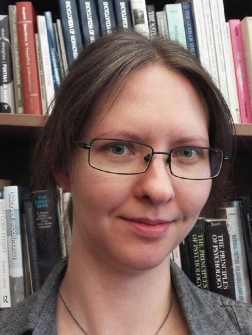

Currently looking for post doc prospects! Let me know if you have a project in need of a digital humanist.

Welcome to my personal website.
I am a Doctoral Researcher in Digital Language Studies at the University of Turku. My doctoral dissertation research combines computational text mining, topic modeling, and emotion analysis to study political speech.
More specifically, my dissertation explores the "topic landscape" of the Finnish Parliament (1907–2020), examining how topics shape language choice (Finnish, Swedish, English, Latin) and emotion expression.
My earlier work has applied quantitative, computational, and corpus-based methods, such as topic modeling and text reuse analysis, to large textual datasets. In addition to political texts, I have researched matriculation examination essays, online conspiracy theories, and news in historical newspapers across various academic projects.
I also have an earlier Bachelor of Science in biotechnology, and biosciences are still close to my heart.
Topic modeling (LDA, context-window modeling), emotion modeling, collocation analysis, and diachronic text analysis.
Web/data scraping, corpus compilation, dataset pre-processing, and pipeline development for unstructured text.
Python, R, Git/GitHub, Linux command line, and NLP tools.
Language choice dynamics, domain contraction, and code-switching in political discourse (Finnish, Swedish, English, Latin).